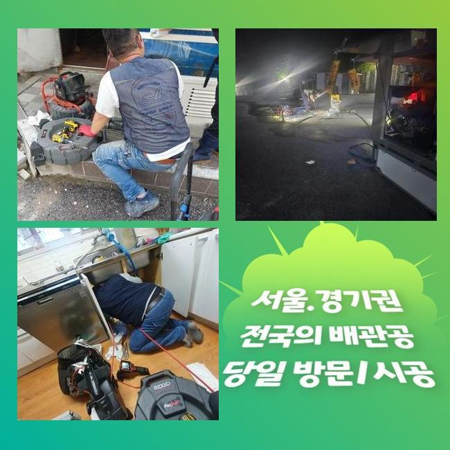
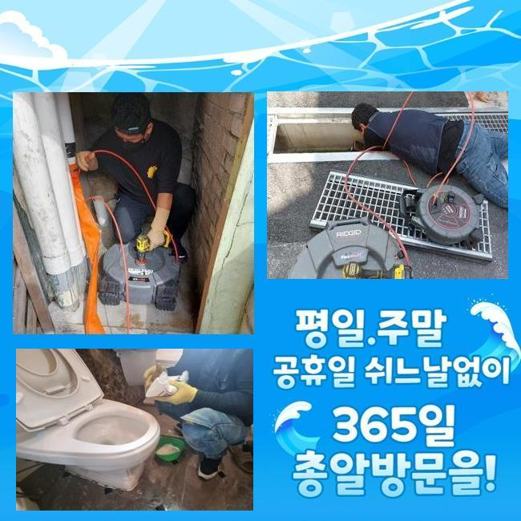
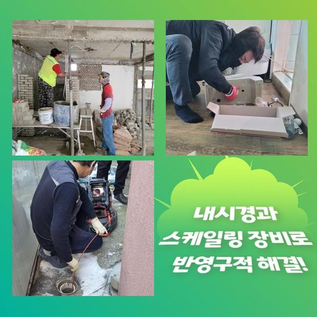
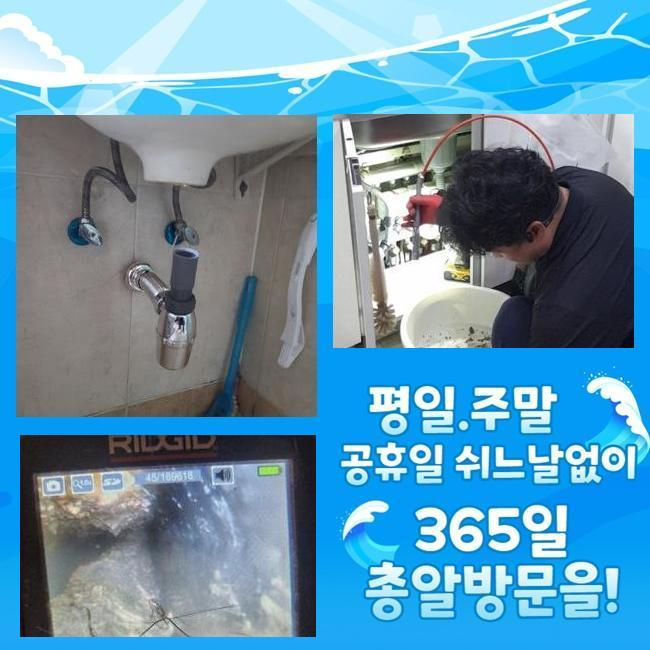
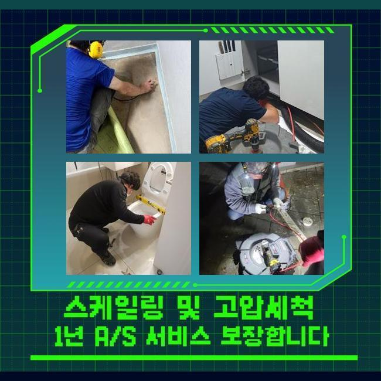
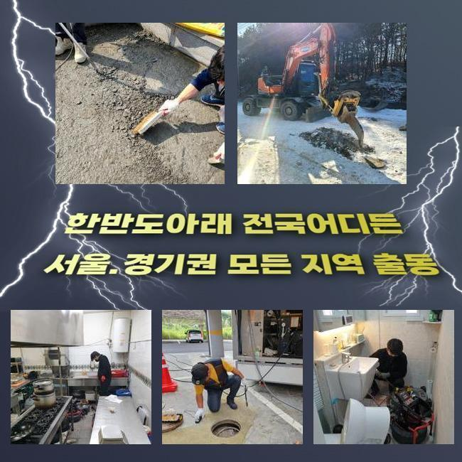
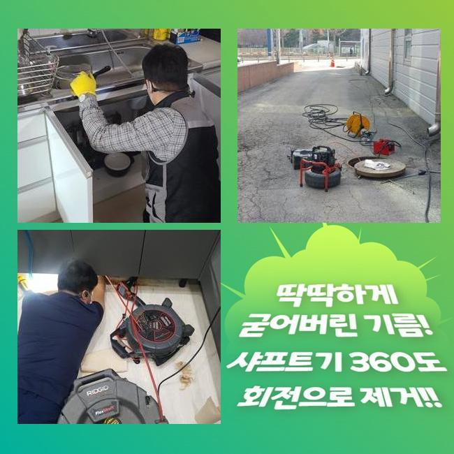

🏠 세마동오수관뚫음 원동 집수정청소 누수탐지공사
용인 세마동 싱크대막힘 전문 시공 후기

📋 작업 개요
- 위치: 용인 세마동, 세마동, 용인
- 서비스 유형: 싱크대막힘, 하수구막힘, 배관막힘, 집수정막힘, 누수수리, 뚫는업체, 배관청소, 고압세척, 설비공사, 악취차단
- 작업 일시: 2025. 1. 29. 11:36
- 업체명: 하수구수사대 (010-5615-2118)
🔍 문제 상황
세마동오수관뚫음 원동 집수정청소 누수탐지공사
저희들은 하수관쪽의 여러가지 수선을 도맡고 있어요
전문가가 상시로 대기하여 의뢰인께서 부닥치신 트러블에 즉시 대처해드리고 있죠
금번엔 주방시설의 배수구막힘 처치 과정을 소개해드리려 합니다
그저께 의뢰를 해주셨던 위치는 푸드코트 건물입니다
한 음식점의 배수문이 고장난 상황이었고 그것에 더하여 공용화장실 통수마저 제대로 안돼 문제가 되는 상황이었습니다
마침 근방에 대기중인 작업자가 바로 이동하였으며 알맞은 방책을 수행하기로 하였답니다
주방막힘과 화장실의 배수구막힘이 발발한 데는 보양식 전문식당이었습니다
싱크대에선 음식찌꺼기의 유입량이 많아 관막힘이 자주 생기죠
그러므로 식당운영을 하고계신 경우엔 그에 대처할수 있는 다방면의 방법들을 모색하시곤 하는데요
평상시 조심스럽게 쓰셨더라도 어느날 갑자기 큰 이물이 유입된다면 정체가 생길수 있으므로 조심해야 해요
금일 소개드릴 장소는 무슨 사유로 고장이 생긴건지 신밀하게 파악하도록 합니다
우선 주방쪽부터 점검하기로 했죠
한식집의 경우 일반적인 주거지의 주방시설물과 상이하게 배수스텐의 부피도 상당합니다

🔎 원인 분석
💡 전문가 진단: 정밀 진단 장비를 사용하여 슬러지의 고착 여부를 판명하고 타격/세척 작업을 실시했습니다.
그렇기 때문에 처리가능한 수도량도 늘어나게 되는건데요
따라서 일반적인 주거지의 배수기능 테스트를 기준해서 이상을 정해서는 곤란하고 적절한 수량을 투입시켜 배수가 제대로 되는지 파악해보아야 하겠습니다
해당 과정을 신밀히 안하고 대충 넘어간다면 얼마가지 못하여서 막힘현상이 또다시 일어날수가 있어요
배수되는 추이를 확인했고 신속하게 하수처리가 안된다는걸 간파할수가 있었어요
찬찬히 빠지기는 했으나 식당운영을 재개하기엔 어려운 상황이었답니다
그다음은 배수관 속으로 배관카메라를 투입하여 선명하게 상태를 점검해보기로 했습니다
유분이 포함된 노폐물과 석회물질들이 관로속에 들어찬 상태였죠
관로 속에 들어가면 곤란해지는 물질들이 누증되어서 막힘이 발현된거죠
이것과 관련지어서 배관에 투입돼면 문제가 될것들에 대하여 안내해 드릴게요
말씀드리는 사안들을 메모해두셨다가 평상시에 적용하시길 바라요
기름슬러지가 차가운물과 만나게되면 굳어지고 때문에 배관면에 체류할 여지가 높답니다
그렇기에 반드시 주방용 휴지로 소제한후에 물세정을 하는것이 중요하답니다
또한 기름을 별도로 처리하는 과정도 능동적으로 쓰시는게 좋겠죠
매장에 구비해두시는 원두커피에서 발생되는 가루들도 하수도막힘을 일으킬수 있고요
원두가루는 기름기를 빨아들이는 특징이 있기에 관안에서 뒤섞이기 쉬어요

🔧 작업 과정
그러므로 일반쓰레기로 분류하여 버리시길 바라요
설거지를 하는도중 잔여물질을 곧장 주방배관에 흘려보내면 배관면에 누증될 여지가 있어요
양념장과 같은것들은 알갱이가 작기에 거름망을 지나쳐 관로로 이동하기 쉬우므로 따로 버리는게 좋아요
메뉴를 조리하시다가 생겨난 전분가루 등도 주방설비에 그냥 투입해 버리면 엉겨붙어서 배관정체를 유발하기 쉽습니다
그러므로 이러한 것들은 필수로 분리수거해서 배수시설물을 청결하게 관리해나가실 것을 권장합니다
내시경카메라를 통해 하단부분까지 검사했더니 중앙의 관로까지 막힘이 있을거라고 예상되었으며 추가적으로 검정하기로 결단내렸죠
우선적으로 문의하신 분의 주방시설의 하수도 세척을 해야하겠죠
백숙을 끓이는 장소다보니 다른종류의 식당과 상이하게 유분찌꺼기가 많았으며 그외 음식쓰레기들까지 합쳐져 길목이 차단된 형국이었습니다
그상황이 장시간 유지되면서 관로와 일체화되어버린 형국이었습니다
샤프트장비를 가동시켜 본 지점의 초반 세정시공을 시행하기로 했습니다
부품들은 배관의 특성에 맞게끔 교체하여 시공할때도 있는데 통상적으로 쇠줄로 만들어진 관통체인을 씁니다
케이블의 끝부분에 해당하는 관통헤드가 체결되어 관로속에 집어넣고 작동시키면 고속도로 돌아가면서 누증된 이물질들을 분쇄하는 기능을 해주죠
통상 해당 기계를 돌리면 웬만한 이물들은 해결돼요
하지만 이전 점검을 토대로 여긴 공동 하수도까지 이물이 전이되었다는걸 파악한바가 있는데요
그럴때에는 개별하수관의 세정만으로 본질적인 막힘이 처리되지 않죠
뚫린걸로 보일수는 있겠으나 메인 관로가 막혔다면 몇주정도가 흐른다음에 거듭해서 파이프가 막혀버리게 되겠죠
개별 하수관 세정을 끝마친뒤 지하실쪽에 있는 공동관을 진단해 주었답니다
내시경기기를 투입하니 두텁게 누증된 검은색의 이물질들이 가득차 있었어요
장기간에 걸쳐 쌓인걸로 보였으며 크기도 크다보니 누적량이 많아진거죠
해당 위치를 고속물세척으로 정리하기로 결단했고 2시간가까이 세정을 시행했죠
횡주배관까지 분쇄청소를 끝내고 의뢰인분의 닭요리집으로 올라가서 하수관 점검과 화장실의 배수구까지 진단수리를 수행하였더니 거짓말같이 속시원하게 배수가 되어 가볍게 빠져나갔습니다
금번 지점은 막대한 유분찌꺼기와 석회물질들이 주 원인이었고 기계실의 공동관까지 정체가 이루어져있었기에 형편이 심각했었죠
해당 문제를 분쇄기기와 고압물세척으로 짜임새있게 처치하였으며 시원하게 뚫린 상황을 목견할수가 있던거죠
공정을 끝마치고 차후 일어날수 있는 고장과 알고있으면 도움되는 파이프보존 대책들을 말씀드렸죠


✅ 작업 완료
해당내용에 대해 추가적 궁금증이 있으셔서 살뜰하게 설명해 드렸어요
세척을 대충대충 진행해버린다면 얼마뒤 하수관에 더욱더 큰 문제가 일어날수가 있죠
그렇기에 정확한 시공방식을 접목시켜 해결해내려는 방침이 중요하답니다
이에 따라 여러종류의 기기를 통해서 공정을 실행해야 한단걸 말씀드려요
영업장에서 급작스레 배수관정체가 생겨난다면 정상적인 운영이 어려운 상황에 봉착하겠죠
그러니 미세하게나마 트러블이 목도되었다면 망설이지말고 전문가에게 연락하시길 당부드립니다




⚠️ 베란다 누수 및 방수 관리 방법
- ✅ 비가 많이 올 때 창틀 주변이나 아래층 천장에 얼룩이 생기는지 정기적으로 확인해 보세요.
- ✅ 우수관 주변 실리콘 마감이 들뜨거나 깨진 틈새가 있는지 손상 여부를 수시로 체크하세요.
- ✅ 베란다 바닥 타일의 줄눈(메지)이 소실되면 그 틈으로 물이 침투하여 누수가 유발됩니다.
- ✅ 누수 의심 증상 발견 시 방치하면 아래층 손실이 커지므로 즉시 전문가의 진단을 받으십시오.
💡 핵심 정리
- 확실한 장비 작업(내시경 점검 및 샤프트 스케일링)으로 원인을 뿌리 뽑습니다.
- 작업 후 1년 이내에 동일한 부위 재발 시 100% 무상 A/S 서비스를 보장합니다.
- 서울 · 경기 · 인천 전 지역에 24시간 언제든 긴급 출동할 수 있도록 항시 대기 중입니다.
❓ 자주 묻는 질문 (FAQ)
🚨 용인 세마동 싱크대막힘 문제로 고민이신가요?
정확한 원인 진단과 확실한 시공으로 재발 없는 해결을 약속드립니다.
24시간 긴급 출동 | 서울 · 경기 · 인천 전지역 | 1년 내 재발 시 무상 A/S